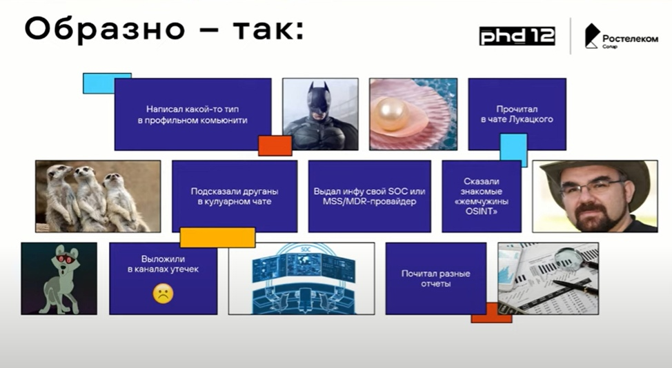
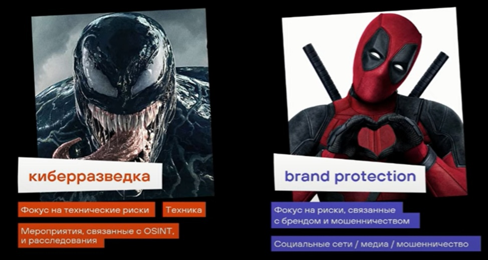
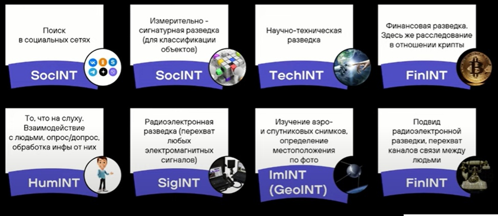
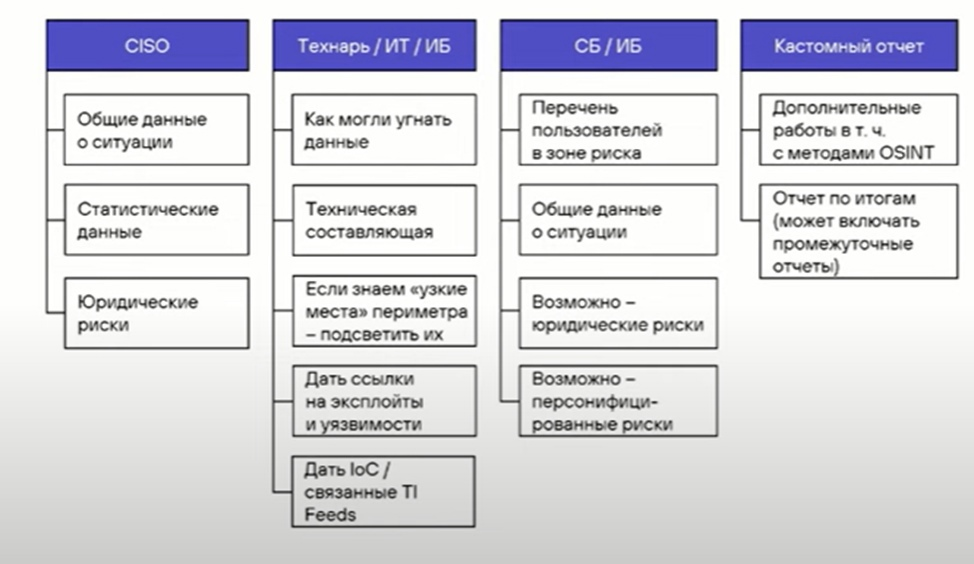

Доклад с форума PHD12
Киберразведка --- это просто, и чем она отличается от «пробива», OSINT и HUMINT
Дмитрий Махаев «Ростелеком-Солар»
Как сейчас получаем информацию о готовящихся и прошедших атаках?

В чем проблема такого подхода?
- Возможная неполнота информации: SOC даст технические данные, но может
не дать контекста для принятия решения • Малое время на возможную
подготовку к атаке • Невозможность предугадать, как именно будет
производиться атака • Возможное искажение информации или субъективная
интерпритация
Что есть OSINT?
- Сбор информации о человеке или организации из открытых источников и
- ее последующий Разведка на основе открытых данных активно
- применялась еще во время Второй мировой войны в Британии и США:
специальные подразделения мониторили трансляции противника. В
настоящее время методы OSINT используются не только во внешней
политике, но и в сфере информационной безопасности.
КИБЕРРАЗВЕТКА = BRAND PROTECTION

Направления OSINT

Что писать в отчет?
В первую очередь, нужно определить конечных получателей отчета.
Универсального отчета быть не может
